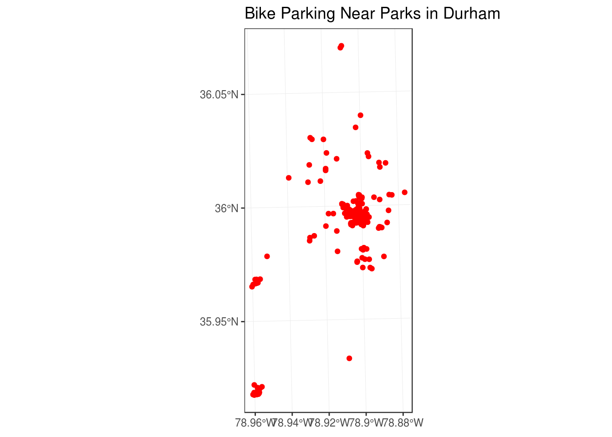
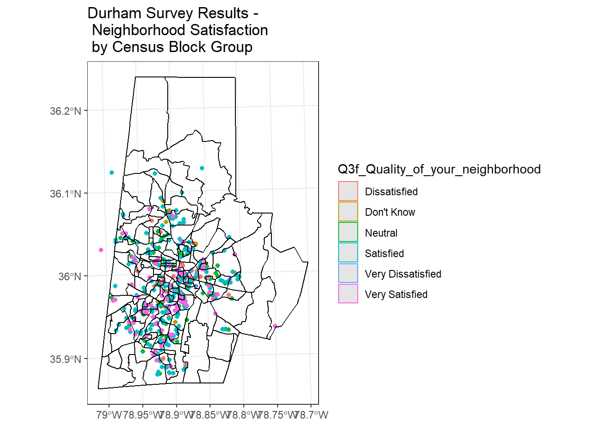
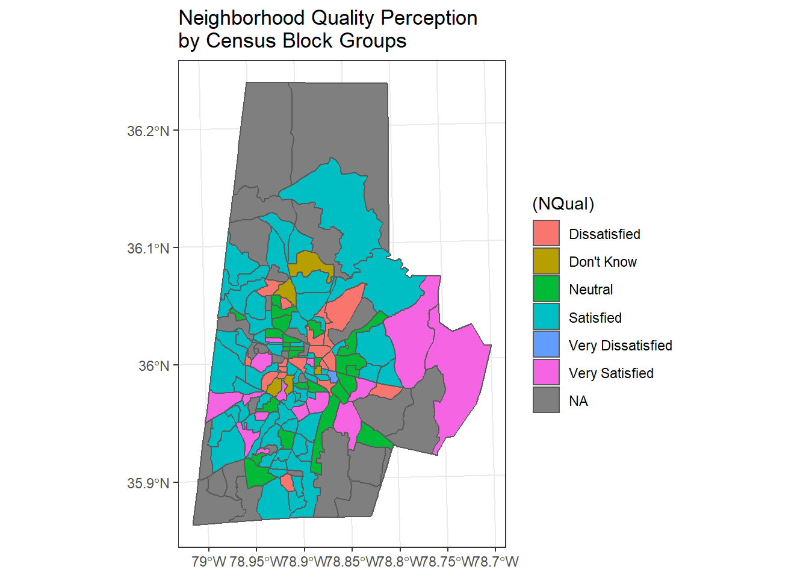
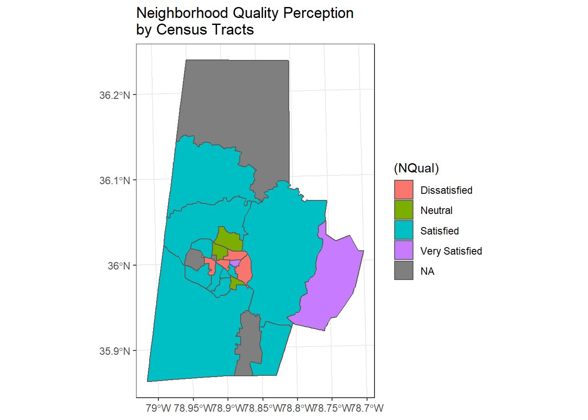

Spatial Operations 1
Lesson Goals
- Familiarity with some typical topological operations (spatial subsetting, proximity, aggregation, spatial joins, dissolve) using
sf - Familiarity with some typical raster operations using the
rasterpackage and combining withvectordata
Spatial Subsetting
Let’s return to the Durham Open Data we grabbed in the previous section - the parks and trails layers in particular. A typical spatial question we might ask of the data is ‘what trails go through parks in town?’ You should already have loaded but code below loads again, and shows the simplest of all methods to perform this spatial subset using sf:
library(sf)
trails <- read_sf("https://opendurham.nc.gov/api/v2/catalog/datasets/existing-trails/exports/geojson")
parks <- read_sf("https://opendurham.nc.gov/api/v2/catalog/datasets/city-parks/exports/geojson")
plot(trails$geometry, col='green', axes=T)
plot(parks$geometry, col='blue', add=T)
trails_in_parks <- trails[parks,]
plot(trails_in_parks$geometry, col='red', lwd = 2, add=T)
title(main='Parks and Trails in Durham')
Notice the warning we got about planar coordinates - should we be concerned about that?
Proximity calculation
Here’s a gist I have of a function I’ve used based ongDistance in geos package working with sp points and polygons - we’ll try to implement something similar in sf:
Let’s grab a geojson of bike parking locations from Durham Open Data, and then let’s try to find and map all the bike parking that is within a half-mile of a park - in code below I test and try and few things and use some techniques you may have questions about. See if this all makes sense, we’ll talk through, ask questions and we can discuss:
library(dplyr)
bike_parking <- read_sf("https://opendurham.nc.gov/api/v2/catalog/datasets/durham-bike-parking/exports/geojson")
bike_parking <- st_transform(bike_parking, crs=26917)
parks <- st_transform(parks, crs=26917)
sel <- st_is_within_distance(bike_parking, parks, dist = 804) # conversion of miles to meters - why am I using meters here?
summary(lengths(sel) > 0)
# This is obviously not correct if we were to look at the features in ArcMap - there are numerous bike parking stations more than a mile from parks - something is wrong here....
# Let's try a different approach...perhaps I'm not understanding using the built in approach above, but here's how I got it to work
dist_mat <- st_distance(bike_parking, parks) # this creates a distance matrix of distances between each bike parking station and each park
dist_mat <- as.data.frame(dist_mat) # make it a data frame for manipulation
# run the head statement below - why do I have 'as.data.frame' in here?
head(as.data.frame(bike_parking))
# Do you notice something strance about all the distance values in the matrix we produced?
dist_mat <- mutate_all(dist_mat, function(x) as.numeric(x)) # we use mutate_all from dplyr to convert everything in data frame to actual numeric values
dist_mat$min <- apply(X=dist_mat, MARGIN=1, FUN=min) # use apply function to generate new minimum distance column
any(dist_mat$min >0) # Still showing me there are no bike parking stations more than a half-mile from parks, which I know is not true from mapping the data
# solution is that there is a park record with corrupt geometry - park with 'objectid' 28 - it's distance is zero to every bike station!
# once we remove this record, the simple solution works just fineThe code chunk above identified a problem in the data - below we deal with it and use the simplest method in sf to plot our proximity results:
library(ggplot2)
bike_parking <- read_sf("https://opendurham.nc.gov/api/v2/catalog/datasets/durham-bike-parking/exports/geojson")
bike_parking <- st_transform(bike_parking, crs=26917)
parks <- st_transform(parks, crs=26917)
parks <- parks[!parks$objectid==28,]
sel <- st_is_within_distance(bike_parking, parks, dist = 804) # just generating a distance matrix again to double-check
summary(lengths(sel) > 0) ## Mode FALSE TRUE
## logical 38 222# That looks more like it! And I verified in desktop GIS that this is the correct answer
# Now it's simple to pull out what we want...
bike_parking_near_parks <- bike_parking[parks, ,op = st_is_within_distance, dist = 804]
ggplot() +
# geom_sf(data=parks, fill = "green", color="green") +
geom_sf(data=bike_parking_near_parks, fill = "red", show.legend = F, color="red") +
labs(title="Bike Parking Near Parks in Durham") +
theme_bw()
Using sf and dplyr together
It took a bit of a detour to figure out but we got our proximity question solved - now say I’m concerned it might rain. I want to know where the covered bike parking is that is near parks and along trails. Given what we know so far, see if you can figure out how to:
- subset the bike parking near parks to records within 100 meters of trails
- and subset to just those bike parking locations that are covered
If you’re comfortalbe with dplyr, try doing this with dplyr.
trails <- st_transform(trails, crs=st_crs(parks))
bike_parking_near_parks_and_trails <- bike_parking_near_parks[trails, ,op = st_is_within_distance, dist = 100]
# dplyr chained operation
covered_bike_parking_near_parks_and_trails <- bike_parking_near_parks_and_trails %>%
dplyr::filter(covered == 'yes')
ggplot() +
geom_sf(data=trails, color="green") +
geom_sf(data=covered_bike_parking_near_parks_and_trails, fill = "red", show.legend = F, color="red") +
labs(title="Covered Bike Parking Near Parks \nAlong Trails in Durham") +
theme_bw()Spatial Joining and Aggregating
Let’s grab a couple more sample data sets from Open Data Durham. Let’s use EnviroAtlas data and schools, and we’ll join schols to EnviroAtlas to determine percent population below poverty for the block group each school lands in using a spatial join.
library(dplyr)
library(ggplot2)
enviroatlas <- read_sf("https://opendurham.nc.gov/api/v2/catalog/datasets/enviroatlas/exports/geojson")
public_schools <- read_sf("https://opendurham.nc.gov/api/v2/catalog/datasets/public-schools/exports/geojson")
# We want non-public schools too, but this is only available as tabular files, not geojson or shapefile:
non_public_schools <- read.csv("https://opendurham.nc.gov/api/v2/catalog/datasets/non-public-schools-in-durham-county-by-type/exports/csv", sep=';')
# Review - how do we promote to spaitial data? NOTE: the csv we read in they recorded latitude and longitude backwards, we fix below
non_public_schools <- st_as_sf(non_public_schools , coords = c("lat", "long"), crs = 4326) # The order should be long then lat, but they recorded it wrong!
# what is crs of public_schools?
st_crs(public_schools)## Coordinate Reference System:
## EPSG: 4326
## proj4string: "+proj=longlat +datum=WGS84 +no_defs"# verify both are equal:
st_crs(public_schools) == st_crs(non_public_schools)## [1] TRUE# We want to combine these two schools data frmaes and preserve school type-
public_schools$Type <- 'Public'
public_schools <- public_schools[c(14,13)]
non_public_schools$Type <- 'Non-Public'
non_public_schools <- non_public_schools[c(17,16)]
schools <- rbind(public_schools, non_public_schools)
ggplot() +
geom_sf(data=schools, aes(col=Type)) +
geom_sf(data=enviroatlas , fill = NA, show.legend = F, color="black") +
labs(title="Schools in Durham and \nCensus Block Groups") +
theme_bw()
# Spatial Join-
schools_env <- st_join(enviroatlas, schools) # st_intersects is the default
schools_env %>%
group_by(block_group_id, Type) %>%
filter(!is.na(Type)) %>%
dplyr::summarize(PercTwicePov = mean(percent_population_with_income_below_twice_the_poverty_level, na.rm = TRUE)) %>%
ggplot() + geom_sf(aes(fill=(PercTwicePov))) +
scale_fill_distiller("Percent Twice Poverty Level", palette = "Greens", direction = 1) +
ggtitle("Percent Living at Twice the Poverty Level by School Type") +
theme_bw() +
facet_wrap(~Type)
Dissolve
We can take a quick look at using a spatial dissolve and then re-aggregate our result to see if there is a difference at another spatial level by dissolving to the tract level - we do this dissolve simply by using dplyr group_by and summarize functions with an sf object!
# We can see we have 78 census tracts -
levels(as.factor(enviroatlas$tract_fips))## [1] "000101" "000102" "000200" "000301" "000302" "000401" "000402"
## [8] "000500" "000600" "000700" "000900" "001001" "001002" "001100"
## [15] "001301" "001303" "001304" "001400" "001501" "001502" "001503"
## [22] "001601" "001603" "001604" "001705" "001706" "001707" "001708"
## [29] "001709" "001710" "001711" "001801" "001802" "001806" "001807"
## [36] "001808" "001809" "002007" "002008" "002009" "002013" "002015"
## [43] "002016" "002017" "002018" "002019" "002020" "002021" "002022"
## [50] "002023" "002024" "002025" "002026" "002027" "002028" "002200"
## [57] "002300" "010703" "010704" "010705" "010706" "010901" "010902"
## [64] "011000" "011102" "011202" "011205" "011300" "011400" "011500"
## [71] "011601" "011602" "011700" "011800" "011901" "011902" "012100"
## [78] "012201" "012202"tracts <- schools_env %>%
group_by(tract_fips) %>%
dplyr::summarize()
# Pull back in school type and poverty
tracts$TwicePercPov <- schools_env$percent_population_with_income_below_twice_the_poverty_level[match(tracts$tract_fips, schools_env$tract_fips)]
tracts$Type <- schools_env$Type[match(tracts$tract_fips, schools_env$tract_fips)]
tracts <- tracts %>%
filter(!is.na(Type))
# And same routine as before to look at our data aggregated to tract level
ggplot(data = tracts) + geom_sf(aes(fill=(TwicePercPov))) +
scale_fill_distiller("Percent Twice Poverty Level", palette = "Greens", direction = 1) +
ggtitle("Percent Living at Twice the Poverty Level by School Type") +
theme_bw() +
facet_wrap(~Type)
If we have time, try exploring another data set from Open Data Durham, or use existing data to put together another spatial subset, join, or aggregation.
Raster - Raster-Vector Processing
Now let’s look at an example of some raster processing. First, we’ll load the Third Fork watershed shapefile I have in our course GitHub repository:
ThirdFork <- st_read('data/Third_Fork.shp')## Reading layer `Third_Fork' from data source `/home/marc/GitProjects/R-User-Group-Spatial-Workshop-2018/data/Third_Fork.shp' using driver `ESRI Shapefile'
## Simple feature collection with 1 feature and 21 fields
## geometry type: POLYGON
## dimension: XY
## bbox: xmin: -78.96945 ymin: 35.90316 xmax: -78.86583 ymax: 35.99798
## epsg (SRID): 4269
## proj4string: +proj=longlat +datum=NAD83 +no_defsggplot(ThirdFork) + geom_sf() + ggtitle("Third Fork Watershed") +
theme_bw()